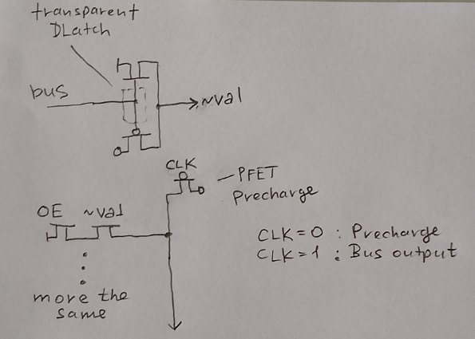

Internal Buses
IR
The current value of the IR register. It is used to obtain decoder inputs, and in various places in the logic.
a
Decoder input.
d
Decoder1 outputs.
w
Decoder2 outputs.
x
Decoder3 outputs.
DL
The bus between the lower part and the DataMux. Most likely it is actually just an internal data bus (DB), but already named as DL.
DV - ALU Operand2
The value from the bottom for the DataMux/ALU.
alu - ALU Operand1
The value from the bottom for the ALU.
Res
ALU result to bottom/DataMux.
Internal bottom buses
| Bus | From Reg | To Reg | Precharge | Bus Polarity |
|---|---|---|---|---|
| abus | H, L, A, SPL, SPH, PCL | alu[7:0] to top (no reg) | CLK2=0 | inverse hold |
| bbus | B, C, D, E, H, L, A, Z, SPL, SPH | DV[7:0] to top (no reg) | CLK2=0 | inverse hold |
| cbus | C, E, L, Z, SPL, PCL | IDU Lo | CLK2=0 | inverse hold |
| dbus | B, D, H, W, SPH, PCH | IDU Hi | CLK2=0 | inverse hold |
| ebus | Dedicated circuit | C, E, L | CLK4=0 | |
| fbus | Dedicated circuit | B, D, H, A | CLK4=0 | |
| zbus | Z | SPL, PCL | ||
| wbus | W | SPH, PCH | ||
| adl | IDU Lo | SPL, PCL, Z | ||
| adh | IDU Hi | SPH, PCH, W |
The names of some internal bottom buses are arbitrary (do not make sense).
Bidirectional bus multiplexing
This section describes the approach used in SM83 to connect bidirectional buses to consumers.

A few words if the schematic doesn't look very clear.
- The value from the bus does not come directly to the consumer, but is stored on the transparent DLatch (on the FET gates). From the DLatch output, the value comes out as a complement, because DLatch by its nature is an ordinary inverter (not). Why is this done? This is "z-protection": protecting the other consumer circuits from the HighZ value on the bus (regular logic only likes to work with 1's and 0's)
- If you want to output a value from the producer to the bus, the design in the figure below is used:
- The value is output via znand, with the OE signal used to "open" znand; for this reason, the producer output value is inverted
- Bus is synchronous (clocked by CLK): when CLK=0 the bus is being precharged, when CLK=1 the value from the producers is updated if they have been "connected" by their OE signals.
- Several producers can be connected to the bus by hanging additional znand in bunches
From the above, it will be clear why the SM83 uses "inverse hold" for registers.
⚠️ Such organization of data output on the bus has one disadvantage: if some producer has placed 0 on the bus, no one will be able to place value 1, because the bus can be driven only by value 0 (using znand), and value 1 gets there only during precharge. Actually a typical case was found recently: https://github.com/msinger/dmg-sim/pull/4 (there is a long discussion there, but you can fill a big cup of coffee, I think it will be interesting reading).